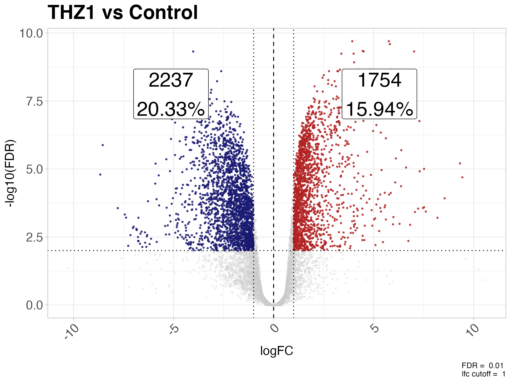
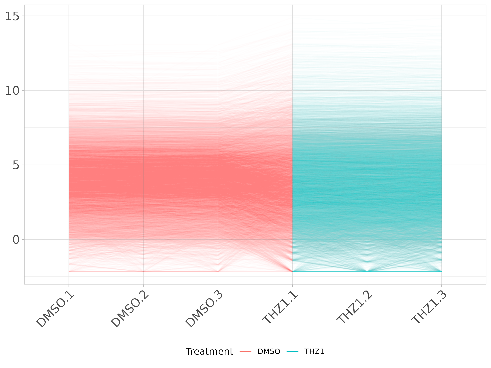
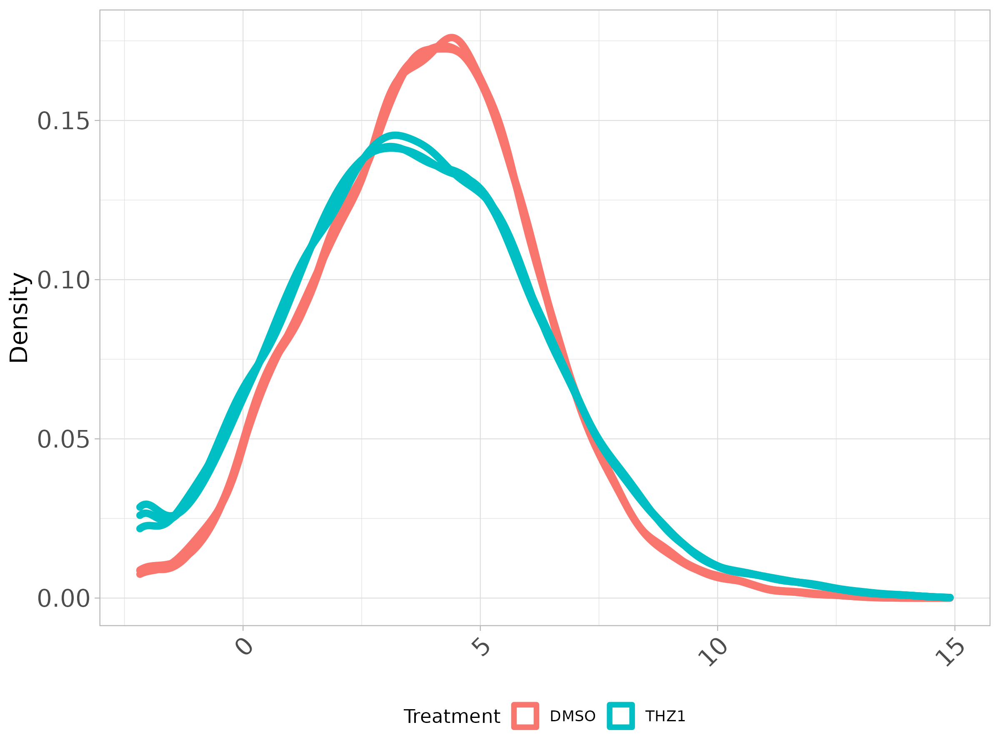

This package contains helper functions for common bioinformatics tasks (and some not-so-common tasks). If you find yourself reusing old code over and over, let me know and we’ll create a function and put it in this package.
I will be adding tests, however, please test functions and let me know when things are broken by either raising an issue on Github or contacting me.
Installation
The latest version can be installed from Github using:
if (!require("devtools")) {
install.packages("devtools")
}
devtools::install_github("coriell-research/coriell")Examples
- Summarize results from differential expression analysis
- Create volcano plot from differential expression results
- Create md plot from differential expression results
- Heatmap with sensible defaults
- Parallel coordinates plot of expression matrix
- Boxplot of expression matrix
- Density plot of expression matrix
The package also contains many other convenience functions so be sure to check out the reference page as well.
Built-in datasets
These datasets are built into the package for testing purposes and are used below to illustrate some functionality.
-
GSE161650_de: Differential expression results of THZ1 vs DMSO from GSE161650 -
GSE161650_lc: Normalized log2 counts from THZ1 vs DMSO replicates from GSE161650
The head of GSE161650_de looks like:
> feature_id logFC unshrunk.logFC logCPM PValue FDR
> 1 JUN 5.759233 5.759908 9.079350 2.919097e-14 1.990666e-10
> 2 IER5 3.931325 3.931420 10.158336 3.365738e-14 1.990666e-10
> 3 GADD45B 5.813030 5.814071 8.432432 6.435666e-14 2.537583e-10
> 4 IER2 4.457981 4.458016 12.223835 1.528890e-13 4.521309e-10
> 5 PIK3R3 -4.018325 -4.019603 7.124408 2.122484e-13 4.752097e-10
> 6 HEXIM1 4.497345 4.497844 8.275561 2.696985e-13 4.752097e-10And GSE161650_lc:
> DMSO.1 DMSO.2 DMSO.3 THZ1.1 THZ1.2 THZ1.3
> A1BG 5.3323512 5.4576081 5.2876011 6.703752 6.8090471 6.7908595
> AAAS 3.8738768 3.8839857 3.5242625 3.768811 4.1406003 3.7454773
> AACS 2.1381539 2.3748462 2.2761971 3.769163 3.4352003 3.4064114
> AADAT 0.8240013 -0.2391457 -0.8699138 -1.342273 0.1967574 -0.8355924
> AAED1 1.2814586 1.5332476 2.0735095 2.443188 2.1270932 0.9707206
> AAGAB 6.8747238 6.7396922 6.6670762 6.756664 6.5840839 6.7662317See the package documentation ?GSE161650_de and ?GSE161650_lc for citation information.
Summarize results from differential expression test
Return a table of up/down/non-de counts and their percentages.
Create volcano plot from differential expression results
library(ggplot2)
plot_volcano(de) +
ggtitle("THZ1 vs Control") +
theme_coriell()
Different significance levels can be used to filter the plotted points. For example, significance levels can be set by specifying the fdr and lfc values.
plot_volcano(de, fdr = 0.01, lfc = log2(2)) +
ggtitle("THZ1 vs Control") +
theme_coriell()
Labels for the counts will be displayed by default. To remove them set annotate_counts = FALSE
plot_volcano(de, fdr = 0.01, lfc = log2(2), annotate_counts = FALSE) +
ggtitle("THZ1 vs Control") +
theme_coriell()
Text labels can also be added for the DE genes by setting label_sig = TRUE. If label_sig = TRUE then the lab argument must also designate a column containing the names of the items to plot. Additional arguments can be passed to ggrepel::geom_text_repel() via ... if you need to modify the behavior of the labels.
plot_volcano(de, fdr = 0.01, lfc = log2(2), label_sig = TRUE, lab = "feature_id") +
ggtitle("THZ1 vs Control") +
theme_coriell()
All aesthetics of the points can also be changed
plot_volcano(de,
fdr = 0.01,
lfc = log2(2),
up_color = "firebrick",
down_color = "midnightblue",
nonde_color = "grey80",
up_alpha = 0.8,
down_alpha = 0.8,
nonde_alpha = 0.25,
up_size = 0.5,
down_size = 0.5,
nonde_size = 0.5
) +
ggtitle("THZ1 vs Control") +
theme_coriell()
Create md plot from differential expression results
plot_md(de) +
ggtitle("THZ1 vs Control") +
theme_coriell()
Different significance levels can be used to filter the plotted points. For example, significance levels can be set by specifying the fdr and lfc values.
plot_md(de, fdr = 0.01, lfc = log2(2)) +
ggtitle("THZ1 vs Control") +
theme_coriell()
Labels for the counts will be displayed by default. To remove them set annotate_counts = FALSE
plot_md(de, fdr = 0.01, lfc = log2(2), annotate_counts = FALSE) +
ggtitle("THZ1 vs Control") +
theme_coriell()
Text labels can also be added for the DE genes by setting label_sig = TRUE. If label_sig = TRUE then the lab argument must also designate a column containing the names of the items to plot. Additional arguments can be passed to ggrepel::geom_text_repel() via ... if you need to modify the behavior of the labels.
plot_md(de, fdr = 0.01, lfc = log2(2), label_sig = TRUE, lab = "feature_id") +
ggtitle("THZ1 vs Control") +
theme_coriell()
All aesthetics of the points can also be changed
plot_md(de,
fdr = 0.01,
lfc = log2(2),
up_color = "firebrick",
down_color = "midnightblue",
nonde_color = "grey80",
up_alpha = 0.8,
down_alpha = 0.8,
nonde_alpha = 0.25,
up_size = 0.5,
down_size = 0.5,
nonde_size = 0.5
) +
ggtitle("THZ1 vs Control") +
theme_coriell()
Heatmap with sensible defaults
We often use the same settings when making calls to pheatmap. This function is a wrapper around pheatmap which uses sensible default values for expression data.
Any of these default values can be overridden by simply supplying the arguments to quickmap as you would pheatmap. This also allows for additional arguments to be passed to the quickmap function for creating row and column annotations.
logcounts <- GSE161650_lc
# plot a heatmap of the logCPM values
quickmap(logcounts)
Other pheatmap arguments can be passed to the quickmap function as well.
# create annotation for columns
col_df <- data.frame(Treatment = rep(c("DMSO", "THZ1"), each = 3))
rownames(col_df) <- colnames(logcounts)
# create color scheme for treatment conditions
ann_colors = list(Treatment = c("DMSO" = "steelblue", "THZ1" = "firebrick"))
# plot the heatmap, passing additional args to pheatmap
quickmap(
logcounts,
annotation_col = col_df,
annotation_colors = ann_colors,
main = "Treatment vs Control"
)
Additional arguments can be set to limit the scales of the heatmap as well as remove low variance features prior to plotting. To remove low variance features set the removeVar argument to the desired proportion of features to drop.
quickmap(
logcounts,
removeVar = 0.9,
annotation_col = col_df,
annotation_colors = ann_colors,
main = "THZ1 vs DMSO"
)The colors of the heatmap scale can also be ‘fixed’ above and below a certain threshold with the fix_extreme and thresh arguments
quickmap(
logcounts,
removeVar = 0.9,
fix_extreme = TRUE,
thresh = 0.5,
annotation_col = col_df,
annotation_colors = ann_colors,
main = "THZ1 vs DMSO"
)Parallel coordinates plot of expression matrix
Parallel coordinates plots (PCP), as well as boxplots and density plots (below), can be useful tools for examining expression patterns across samples before and after normalization, for example. To create a PCP with coriell use the plot_parallel() function.
Using logcounts define above:
# Create PCP plot -- passing additional alpha value to geom_line()
plot_parallel(logcounts, alpha = 0.01) + theme_coriell()
If metadata is supplied then the PCP can be colored by the supplied variable name. Using col_df defined above:
plot_parallel(logcounts, col_df, colBy = "Treatment", alpha = 0.01) +
theme_coriell()
Boxplot of expression matrix
Likewise, boxplots of the expression values can be visualized in a similar fashion with plot_boxplot()
plot_boxplot(logcounts) + theme_coriell()
If metadata are supplied the boxes can be colored by the desired metadata column and additional arguments can be passed to geom_boxplot() to modify the boxplots.
plot_boxplot(logcounts, col_df, fillBy = "Treatment", outlier.shape = NA) +
theme_coriell()
Density plot of expression matrix
Density plots showing the expression values for samples or groups can be plotted using the plot_density() function.
plot_density(logcounts) + theme_coriell()
If metadata are supplied, the lines can be colored by the desired metadata column and additional arguments can be passed to geom_density() to modify the density layer.
plot_density(logcounts, col_df, colBy = "Treatment", size = 2) +
theme_coriell()